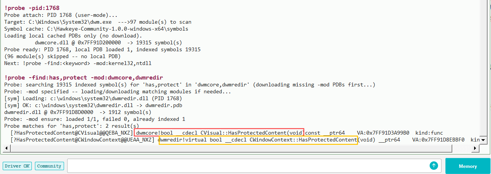
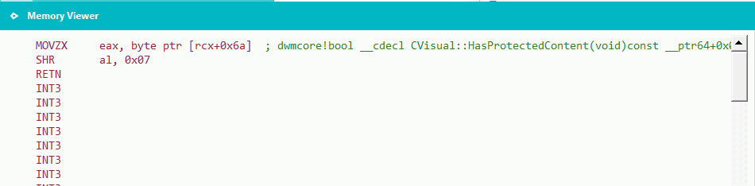
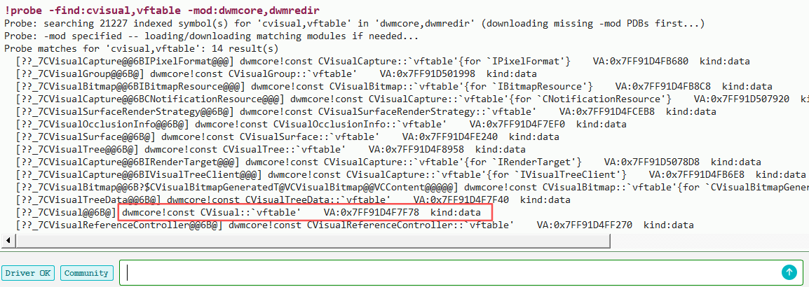
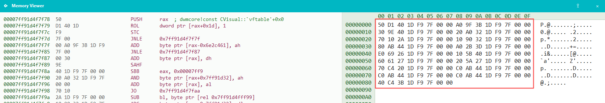
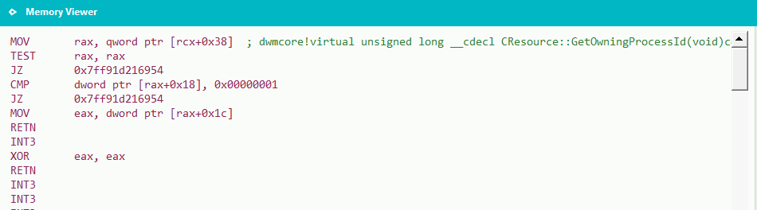

Hidden windows & anti-capture seriesTools: IDA · Cheat Engine · Hawkeye Community
1. TL;DR & scope
Visual-layer hiding marks composition nodes in DWM’s global Visual tree, not
CWindowContext / DisplayAffinity state from
part 1.
dwmcore!CVisual::HasProtectedContent tests
bit 7 of the byte at CVisual+0x6A inside
dwm.exe (SHR 7 in disassembly).
A practical defender-side surface is scanning dwm.exe for
CVisual objects (vtable + protection bit), then attributing hits to an
HWND and owning PID via CVisual::GetHwnd and
CResource::GetOwningProcessId.
Test environment: Windows 11 x64, build 26100 (figures below).
The approach applies to Windows 10 and Windows 11; absolute
field offsets in the figures vary by build, but the
vtable + protection bit + attribution helpers pattern is the same.
Resolve vtable addresses from dwmcore.dll symbols (PDB) and field offsets
from helper disassembly rather than hard-coding layout constants.
Visual-layer scanning is not open-sourced in Hawkeye Community yet;
part 1’s !hidden_windows covers DisplayAffinity only.
Scope: detection and reverse-engineering notes for triage tooling; not a
bypass or evasion guide.
2. Background & series
This series has three parts. This article is part 2:
Part 1: SetWindowDisplayAffinity — mechanism & detection
Part 2 (this page): Visual-layer hiding — mechanism & detection
Part 1 centers on CWindowContext and
SetWindowDisplayAffinity. Visual-layer hiding instead marks composition nodes
in dwmcore (CVisual) — a separate, and in some setups
more flexible, anti-capture path.
3. What is a Visual?
A quick primer on DWM’s Visual model:
DWM maintains a global Visual tree in dwm.exe / dwmcore.dll. Each
CVisual on the tree is a composition node; many top-level windows map to a subtree
in this global Visual tree — the subtree root is often tied to an HWND, and
child visuals underneath describe what that window looks like on the desktop. DWM blends these
visuals into the final desktop frame based on window Z-order, node hierarchy, occlusion, and
various flags. What you see on the monitor is essentially the result of how this global Visual
tree is merged and trimmed.
So the smallest unit DWM actually manages is the Visual, not the window.
4. Cross-process Visual model
DWM cares more about Visuals than about which window or process owns them.
Public research such as
window_hijack
shows that attaching a Visual created in one process to another process’s window passes
only a few checks. The gate lives in:
Once past that gate, composition continues without re-validating whether a Visual is
abnormal — a fragile trust model from a defender’s perspective.
5. CVisual::HasProtectedContent
After digging into dwmcore, we find that each Visual maps to a
CVisual object. CVisual derives from CResource.
CWindowNode is a subclass of CVisual used for subtree-root
visuals bound to a window handle.
Following the same symbol-hunt approach as part 1:

Figure 1. !probe -find:has,protect -mod:dwmcore,dwmredir — the same name appears in both dwmredir and dwmcore.
A joint search in Hawkeye Community finds two similarly named entry points:
CWindowContext::HasProtectedContent (dwmredir) — part 1
CVisual::HasProtectedContent (dwmcore) — this article
Same naming convention, different object type — useful when pivoting from
DisplayAffinity research to Visual-layer hiding.
Disassembly of dwmcore!CVisual::HasProtectedContent is straightforward:

Figure 2. Load [rcx+0x6A], SHR 7, return — i.e. test bit 7 of that byte.
By analogy with part 1, bit 7 at offset +0x6A on a
CVisual object is the protection flag to track.
When locating CVisual instances, the first 8 bytes are the
CVisual vtable pointer (example from build 26100 below):

Figure 3. !probe -find:cvisual,vftable -mod:dwmcore — locate the CVisual vftable.
On build 26100 the vtable pointer is at 0x7FF91D4F7F78.

Figure 4. Vftable address in dwmcore.dll — use it to scan objects on the DWM heap.
Searching for that value in Cheat Engine confirms that the first 8 bytes of a
CVisual object are its vtable pointer, and that bit 7 at offset
+0x6A is the anti-capture protection flag.
Vtable plus flag is not enough for triage. Part 1 yielded PID, window handle, and
window kind directly from CWindowContext. A bare CVisual exposes
less by default — attribution needs extra steps and build-to-build compatibility work.
6. HWND & PID attribution
Can we get a window handle from a Visual?
Yes. If the Visual is a subtree root, read the handle via
CVisual::GetHwnd. For a child node, walk up the parent chain until you reach
a subtree root, then call GetHwnd on that node. Parent-pointer layout and
root detection vary by build — plan for compatibility work.
Disassembly of dwmcore!CResource::GetOwningProcessId:

Figure 6. Handle at visual+0x38; when valid, PID at handle+0x1C.
The logic is straightforward. Resolve handle and PID field offsets from disassembly on
the target build rather than hard-coding +0x38 / +0x1C from the
figures.
With vtable, protection bit, HWND, and PID, a suspicious Visual can be tied
back to a process for triage — the same end state as part 1, reached through a
different object type.
7. Detection
Visual-layer anti-capture state lives on the DWM composition heap, largely decoupled from
the DisplayAffinity / CWindowContext path, so scanning dwm.exe for
protected CVisual objects is a separate detection surface.
A workable scheme mirrors the manual Cheat Engine steps above:
Resolve the CVisual vtable address from dwmcore.dll symbols (PDB).
Scan dwm.exe read-write regions for pointers equal to that vtable.
Test bit 7 at the object-relative offset implied by HasProtectedContent disassembly.
For each hit, attribute to an HWND (GetHwnd, with parent walk if
needed) and owning PID (CResource::GetOwningProcessId or equivalent field reads).
Cross-check against part 1’s !hidden_windows results when both paths may be in play.
Absolute field offsets change between Windows versions and builds. Portability comes from
anchoring on the vtable and resolving helper offsets from symbols or instruction patterns on
the target machine. Treat figure values as one validated snapshot on build 26100, not
constants to paste into a scanner.
8. Reference implementation (Hawkeye Community)
Part 1’s DisplayAffinity detection is implemented in Hawkeye Community as
!hidden_windows (run !hidden_windows -init first) and the staging command
!hidden_windows_sim. Visual-layer scanning described in this article is still
research-only and is not shipped in the open-source Community build yet.
Readers can still reproduce every manual step here with Community tooling:
attach to dwm.exe via !probe -pid:<dwm_pid>, load
dwmcore.dll / dwmredir.dll symbols, and run the
!probe -find: searches shown in the figures.